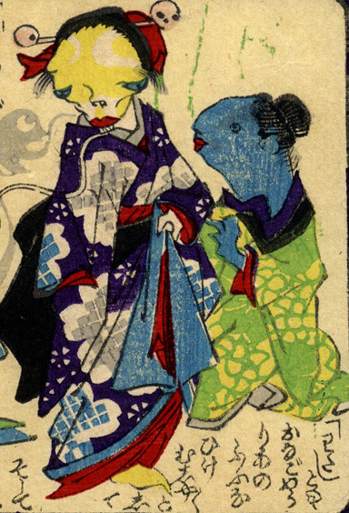

振袖を着た娘の化物。肌は黄色く、髑髏の簪を挿している。褄をとって立っている。傍らには青い肌の化物が寄り添っている。
出典：親書誌：U426_nichibunken_0226：化物の嫁入；バケモノノヨメイリ／日付：2010／資源識別子：U426_nichibunken_0226_0012_0000
Copyright (c)2010- International Research Center for Japanese Studies, Kyoto, Japan. All rights reserved.